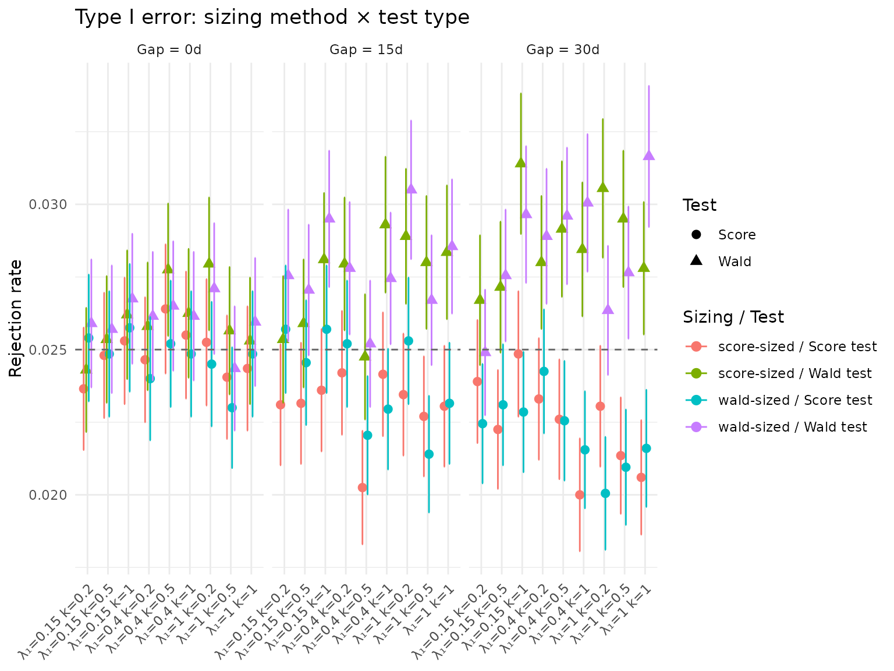
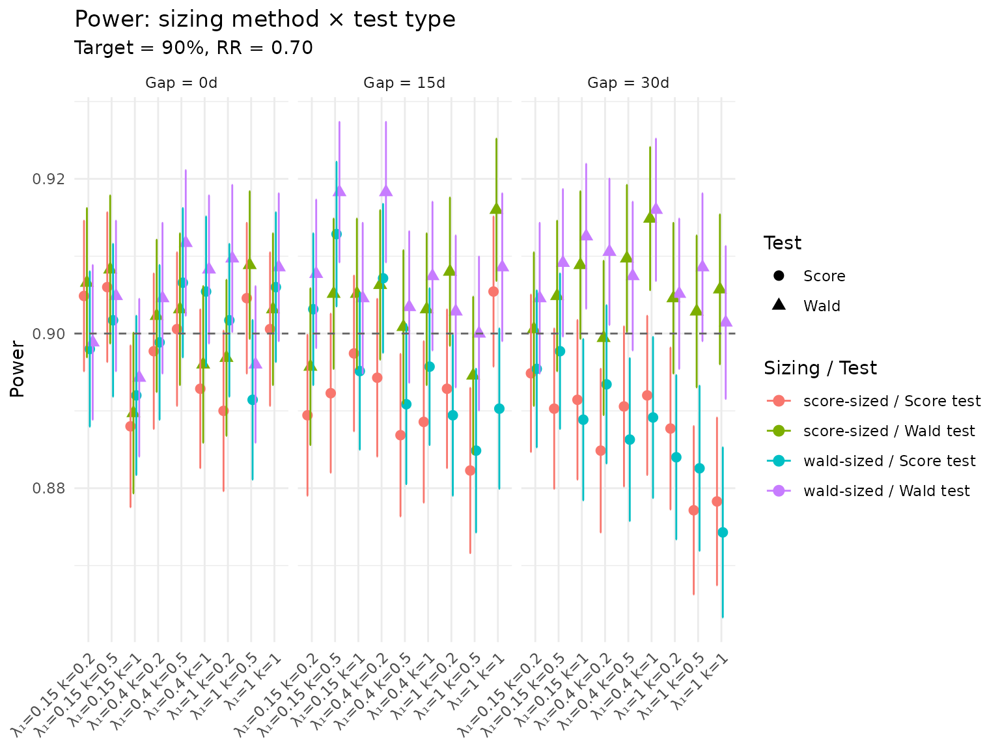
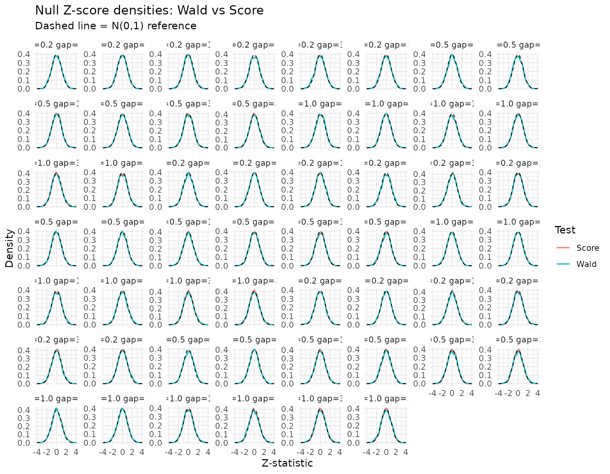

Score vs Wald tests and sample-size recommendations
Source:vignettes/score-vs-wald-simulation.Rmd
score-vs-wald-simulation.RmdIntroduction
This vignette compares the Wald and score test implementations in
mutze_test() across a factorial grid of negative binomial
trial scenarios. It also gives practical recommendations for sample-size
calculation when the usual Zhu–Lakkis / Friede–Schmidli / Mutze Wald
formula is adequate, when score-test sizing is a useful diagnostic, and
when the score test itself is the more important change for Type I error
control.
The Wald sizing option in
sample_size_nbinom(test_type = "wald") uses the alternative
variance \(V_1\) for both the Type I
and power components. The score sizing option in
sample_size_nbinom(test_type = "score") uses the null
variance \(V_0\) for the Type I
component and the alternative variance \(V_1\) for the power component:
\[ n_1 = \frac{(z_{\alpha/s}\sqrt{V_0} + z_\beta\sqrt{V_1})^2} {(\theta - \theta_0)^2}. \]
This distinction matters most when the planned final analysis uses a score statistic evaluated under the null, or when finite-sample Type I error control is more important than preserving the historical Wald analysis convention. In the superiority scenarios below, the Wald and score sample sizes are close; the traditional Wald sample size paired with the score test often provides a useful practical margin for power while preserving the score test’s Type I error protection.
The full \(2 \times 2\) factorial comparison is:
| Wald-sized trial | Score-sized trial | |
|---|---|---|
| Wald test | Wald / Wald | Score / Wald |
| Score test | Wald / Score | Score / Score |
We assess:
- Type I error control under \(H_0: RR = 1\)
- Power under \(H_1: RR = 0.70\)
- Z-score distributions to check asymptotic normality
Tables and figures are rendered from compact precomputed summaries so the CRAN package does not need to bundle the full trial-level simulation output or large interactive widget dependencies.
Results are pre-computed by
data-raw/generate_score_sweep.R, summarized for the CRAN
vignette cache, and loaded here.
Load pre-computed results
summary_file <- system.file("extdata", "score_sweep_summary.rds",
package = "gsDesignNB")
if (summary_file == "" && file.exists("../inst/extdata/score_sweep_summary.rds")) {
summary_file <- "../inst/extdata/score_sweep_summary.rds"
}
raw_file <- system.file("extdata", "score_sweep_results.rds",
package = "gsDesignNB")
if (raw_file == "" && file.exists("../inst/extdata/score_sweep_results.rds")) {
raw_file <- "../inst/extdata/score_sweep_results.rds"
}
if (summary_file != "") {
res <- readRDS(summary_file)
using_summary_cache <- TRUE
} else if (raw_file != "") {
res <- readRDS(raw_file)
using_summary_cache <- FALSE
} else {
stop("Precomputed score sweep summary not found.")
}
config <- res$config
scenarios <- as.data.table(res$scenarios)
base_grid <- as.data.table(res$base_grid)
cat(sprintf(
"Expanded scenarios: %d | Power sims: %s | Null sims: %s | RR: %.2f | alpha: %.3f\n",
nrow(scenarios),
format(config$n_sims_power, big.mark = ","),
format(config$n_sims_null, big.mark = ","),
config$rr_power,
config$alpha
))
#> Expanded scenarios: 54 | Power sims: 3,500 | Null sims: 20,000 | RR: 0.70 | alpha: 0.025
cat(sprintf(
"Cache: %s\n",
if (using_summary_cache) "compact summary" else "full raw simulation output"
))
#> Cache: compact summaryScenario grid
The base scenario grid varies control event rate (\(\lambda_1\)), overdispersion (\(k\)), and minimum inter-event gap. For each base scenario, sample sizes are computed using both the Wald and score variance formulas. In this superiority grid the score-sized trials are equal to or slightly smaller than the Wald-sized trials; score sizing is therefore not a generic “add a few subjects” rule, and the operating characteristics still need to be checked under the planned analysis test.
base_display <- base_grid[, .(
`Control rate` = lambda1,
`Dispersion (k)` = k,
`Event gap (days)` = gap_days,
`N (Wald sizing)` = n_wald,
`N (Score sizing)` = n_score,
`Wald - Score` = n_wald - n_score
)]
knitr::kable(
base_display,
caption = "Base scenario grid with sample sizes by method",
digits = 2
)| Control rate | Dispersion (k) | Event gap (days) | N (Wald sizing) | N (Score sizing) | Wald - Score |
|---|---|---|---|---|---|
| 0.15 | 0.2 | 0 | 304 | 300 | 4 |
| 0.40 | 0.2 | 0 | 158 | 156 | 2 |
| 1.00 | 0.2 | 0 | 104 | 104 | 0 |
| 0.15 | 0.5 | 0 | 406 | 402 | 4 |
| 0.40 | 0.5 | 0 | 260 | 258 | 2 |
| 1.00 | 0.5 | 0 | 206 | 206 | 0 |
| 0.15 | 1.0 | 0 | 576 | 572 | 4 |
| 0.40 | 1.0 | 0 | 430 | 428 | 2 |
| 1.00 | 1.0 | 0 | 378 | 376 | 2 |
| 0.15 | 0.2 | 15 | 320 | 316 | 4 |
| 0.40 | 0.2 | 15 | 174 | 172 | 2 |
| 1.00 | 0.2 | 15 | 120 | 120 | 0 |
| 0.15 | 0.5 | 15 | 428 | 424 | 4 |
| 0.40 | 0.5 | 15 | 280 | 278 | 2 |
| 1.00 | 0.5 | 15 | 226 | 226 | 0 |
| 0.15 | 1.0 | 15 | 606 | 602 | 4 |
| 0.40 | 1.0 | 15 | 458 | 458 | 0 |
| 1.00 | 1.0 | 15 | 404 | 404 | 0 |
| 0.15 | 0.2 | 30 | 338 | 334 | 4 |
| 0.40 | 0.2 | 30 | 190 | 188 | 2 |
| 1.00 | 0.2 | 30 | 136 | 136 | 0 |
| 0.15 | 0.5 | 30 | 448 | 444 | 4 |
| 0.40 | 0.5 | 30 | 300 | 298 | 2 |
| 1.00 | 0.5 | 30 | 244 | 244 | 0 |
| 0.15 | 1.0 | 30 | 634 | 630 | 4 |
| 0.40 | 1.0 | 30 | 486 | 484 | 2 |
| 1.00 | 1.0 | 30 | 426 | 426 | 0 |
Type I error comparison
null_dt <- as.data.table(res$null_summary)
null_long <- melt(
null_dt,
id.vars = c("lambda1", "k", "gap_days", "n_total", "sizing"),
measure.vars = c("rate_wald", "rate_score"),
variable.name = "test",
value.name = "rejection_rate"
)
null_long[, test := fifelse(test == "rate_wald", "Wald", "Score")]
se_long <- melt(
null_dt,
id.vars = c("lambda1", "k", "gap_days", "sizing"),
measure.vars = c("se_wald", "se_score"),
variable.name = "test",
value.name = "se"
)
se_long[, test := fifelse(test == "se_wald", "Wald", "Score")]
null_long <- merge(null_long, se_long,
by = c("lambda1", "k", "gap_days", "sizing", "test"))
null_long[, combo := paste0(sizing, "-sized / ", test, " test")]
null_long[, `:=`(
above_nominal_95 = rejection_rate - 1.96 * se > config$alpha,
below_nominal_95 = rejection_rate + 1.96 * se < config$alpha
)]
type1_summary <- null_long[, .(
`Scenarios` = .N,
`Minimum` = min(rejection_rate),
`Mean` = mean(rejection_rate),
`Maximum` = max(rejection_rate),
`Above nominal beyond MC error` = sum(above_nominal_95),
`Below nominal beyond MC error` = sum(below_nominal_95)
), by = .(`Sizing` = sizing, `Test` = test)]
knitr::kable(
type1_summary[order(Sizing, Test)],
caption = "Type I error synopsis across the scenario grid",
digits = 4
)| Sizing | Test | Scenarios | Minimum | Mean | Maximum | Above nominal beyond MC error | Below nominal beyond MC error |
|---|---|---|---|---|---|---|---|
| score | Score | 27 | 0.0200 | 0.0235 | 0.0264 | 0 | 7 |
| score | Wald | 27 | 0.0243 | 0.0274 | 0.0314 | 15 | 0 |
| wald | Score | 27 | 0.0200 | 0.0236 | 0.0257 | 0 | 9 |
| wald | Wald | 27 | 0.0244 | 0.0274 | 0.0316 | 13 | 0 |
null_display <- null_long[order(lambda1, k, gap_days, sizing, test),
.(
`Control rate` = lambda1,
Dispersion = k,
`Gap (days)` = gap_days,
Sizing = sizing,
N = n_total,
Test = test,
`Type I error` = round(rejection_rate, 4),
SE = round(se, 4)
)
]
knitr::kable(
null_display,
caption = sprintf(
"Type I error rate: nominal alpha = %.3f, %s null sims/scenario",
config$alpha,
format(config$n_sims_null, big.mark = ",")
)
)| Control rate | Dispersion | Gap (days) | Sizing | N | Test | Type I error | SE |
|---|---|---|---|---|---|---|---|
| 0.15 | 0.2 | 0 | score | 300 | Score | 0.0237 | 0.0011 |
| 0.15 | 0.2 | 0 | score | 300 | Wald | 0.0243 | 0.0011 |
| 0.15 | 0.2 | 0 | wald | 304 | Score | 0.0254 | 0.0011 |
| 0.15 | 0.2 | 0 | wald | 304 | Wald | 0.0259 | 0.0011 |
| 0.15 | 0.2 | 15 | score | 316 | Score | 0.0231 | 0.0011 |
| 0.15 | 0.2 | 15 | score | 316 | Wald | 0.0254 | 0.0011 |
| 0.15 | 0.2 | 15 | wald | 320 | Score | 0.0257 | 0.0011 |
| 0.15 | 0.2 | 15 | wald | 320 | Wald | 0.0276 | 0.0012 |
| 0.15 | 0.2 | 30 | score | 334 | Score | 0.0239 | 0.0011 |
| 0.15 | 0.2 | 30 | score | 334 | Wald | 0.0267 | 0.0011 |
| 0.15 | 0.2 | 30 | wald | 338 | Score | 0.0225 | 0.0010 |
| 0.15 | 0.2 | 30 | wald | 338 | Wald | 0.0249 | 0.0011 |
| 0.15 | 0.5 | 0 | score | 402 | Score | 0.0248 | 0.0011 |
| 0.15 | 0.5 | 0 | score | 402 | Wald | 0.0254 | 0.0011 |
| 0.15 | 0.5 | 0 | wald | 406 | Score | 0.0249 | 0.0011 |
| 0.15 | 0.5 | 0 | wald | 406 | Wald | 0.0257 | 0.0011 |
| 0.15 | 0.5 | 15 | score | 424 | Score | 0.0232 | 0.0011 |
| 0.15 | 0.5 | 15 | score | 424 | Wald | 0.0259 | 0.0011 |
| 0.15 | 0.5 | 15 | wald | 428 | Score | 0.0245 | 0.0011 |
| 0.15 | 0.5 | 15 | wald | 428 | Wald | 0.0271 | 0.0011 |
| 0.15 | 0.5 | 30 | score | 444 | Score | 0.0222 | 0.0010 |
| 0.15 | 0.5 | 30 | score | 444 | Wald | 0.0272 | 0.0011 |
| 0.15 | 0.5 | 30 | wald | 448 | Score | 0.0231 | 0.0011 |
| 0.15 | 0.5 | 30 | wald | 448 | Wald | 0.0276 | 0.0012 |
| 0.15 | 1.0 | 0 | score | 572 | Score | 0.0253 | 0.0011 |
| 0.15 | 1.0 | 0 | score | 572 | Wald | 0.0262 | 0.0011 |
| 0.15 | 1.0 | 0 | wald | 576 | Score | 0.0257 | 0.0011 |
| 0.15 | 1.0 | 0 | wald | 576 | Wald | 0.0267 | 0.0011 |
| 0.15 | 1.0 | 15 | score | 602 | Score | 0.0236 | 0.0011 |
| 0.15 | 1.0 | 15 | score | 602 | Wald | 0.0281 | 0.0012 |
| 0.15 | 1.0 | 15 | wald | 606 | Score | 0.0257 | 0.0011 |
| 0.15 | 1.0 | 15 | wald | 606 | Wald | 0.0295 | 0.0012 |
| 0.15 | 1.0 | 30 | score | 630 | Score | 0.0249 | 0.0011 |
| 0.15 | 1.0 | 30 | score | 630 | Wald | 0.0314 | 0.0012 |
| 0.15 | 1.0 | 30 | wald | 634 | Score | 0.0228 | 0.0011 |
| 0.15 | 1.0 | 30 | wald | 634 | Wald | 0.0296 | 0.0012 |
| 0.40 | 0.2 | 0 | score | 156 | Score | 0.0246 | 0.0011 |
| 0.40 | 0.2 | 0 | score | 156 | Wald | 0.0258 | 0.0011 |
| 0.40 | 0.2 | 0 | wald | 158 | Score | 0.0240 | 0.0011 |
| 0.40 | 0.2 | 0 | wald | 158 | Wald | 0.0261 | 0.0011 |
| 0.40 | 0.2 | 15 | score | 172 | Score | 0.0242 | 0.0011 |
| 0.40 | 0.2 | 15 | score | 172 | Wald | 0.0279 | 0.0012 |
| 0.40 | 0.2 | 15 | wald | 174 | Score | 0.0252 | 0.0011 |
| 0.40 | 0.2 | 15 | wald | 174 | Wald | 0.0278 | 0.0012 |
| 0.40 | 0.2 | 30 | score | 188 | Score | 0.0233 | 0.0011 |
| 0.40 | 0.2 | 30 | score | 188 | Wald | 0.0280 | 0.0012 |
| 0.40 | 0.2 | 30 | wald | 190 | Score | 0.0243 | 0.0011 |
| 0.40 | 0.2 | 30 | wald | 190 | Wald | 0.0289 | 0.0012 |
| 0.40 | 0.5 | 0 | score | 258 | Score | 0.0264 | 0.0011 |
| 0.40 | 0.5 | 0 | score | 258 | Wald | 0.0278 | 0.0012 |
| 0.40 | 0.5 | 0 | wald | 260 | Score | 0.0252 | 0.0011 |
| 0.40 | 0.5 | 0 | wald | 260 | Wald | 0.0265 | 0.0011 |
| 0.40 | 0.5 | 15 | score | 278 | Score | 0.0203 | 0.0010 |
| 0.40 | 0.5 | 15 | score | 278 | Wald | 0.0248 | 0.0011 |
| 0.40 | 0.5 | 15 | wald | 280 | Score | 0.0220 | 0.0010 |
| 0.40 | 0.5 | 15 | wald | 280 | Wald | 0.0252 | 0.0011 |
| 0.40 | 0.5 | 30 | score | 298 | Score | 0.0226 | 0.0011 |
| 0.40 | 0.5 | 30 | score | 298 | Wald | 0.0291 | 0.0012 |
| 0.40 | 0.5 | 30 | wald | 300 | Score | 0.0226 | 0.0010 |
| 0.40 | 0.5 | 30 | wald | 300 | Wald | 0.0296 | 0.0012 |
| 0.40 | 1.0 | 0 | score | 428 | Score | 0.0255 | 0.0011 |
| 0.40 | 1.0 | 0 | score | 428 | Wald | 0.0262 | 0.0011 |
| 0.40 | 1.0 | 0 | wald | 430 | Score | 0.0249 | 0.0011 |
| 0.40 | 1.0 | 0 | wald | 430 | Wald | 0.0261 | 0.0011 |
| 0.40 | 1.0 | 15 | score | 458 | Score | 0.0242 | 0.0011 |
| 0.40 | 1.0 | 15 | score | 458 | Wald | 0.0293 | 0.0012 |
| 0.40 | 1.0 | 15 | wald | 458 | Score | 0.0230 | 0.0011 |
| 0.40 | 1.0 | 15 | wald | 458 | Wald | 0.0274 | 0.0012 |
| 0.40 | 1.0 | 30 | score | 484 | Score | 0.0200 | 0.0010 |
| 0.40 | 1.0 | 30 | score | 484 | Wald | 0.0284 | 0.0012 |
| 0.40 | 1.0 | 30 | wald | 486 | Score | 0.0216 | 0.0010 |
| 0.40 | 1.0 | 30 | wald | 486 | Wald | 0.0301 | 0.0012 |
| 1.00 | 0.2 | 0 | score | 104 | Score | 0.0253 | 0.0011 |
| 1.00 | 0.2 | 0 | score | 104 | Wald | 0.0279 | 0.0012 |
| 1.00 | 0.2 | 0 | wald | 104 | Score | 0.0245 | 0.0011 |
| 1.00 | 0.2 | 0 | wald | 104 | Wald | 0.0271 | 0.0011 |
| 1.00 | 0.2 | 15 | score | 120 | Score | 0.0234 | 0.0011 |
| 1.00 | 0.2 | 15 | score | 120 | Wald | 0.0289 | 0.0012 |
| 1.00 | 0.2 | 15 | wald | 120 | Score | 0.0253 | 0.0011 |
| 1.00 | 0.2 | 15 | wald | 120 | Wald | 0.0305 | 0.0012 |
| 1.00 | 0.2 | 30 | score | 136 | Score | 0.0231 | 0.0011 |
| 1.00 | 0.2 | 30 | score | 136 | Wald | 0.0306 | 0.0012 |
| 1.00 | 0.2 | 30 | wald | 136 | Score | 0.0200 | 0.0010 |
| 1.00 | 0.2 | 30 | wald | 136 | Wald | 0.0263 | 0.0011 |
| 1.00 | 0.5 | 0 | score | 206 | Score | 0.0240 | 0.0011 |
| 1.00 | 0.5 | 0 | score | 206 | Wald | 0.0256 | 0.0011 |
| 1.00 | 0.5 | 0 | wald | 206 | Score | 0.0230 | 0.0011 |
| 1.00 | 0.5 | 0 | wald | 206 | Wald | 0.0244 | 0.0011 |
| 1.00 | 0.5 | 15 | score | 226 | Score | 0.0227 | 0.0011 |
| 1.00 | 0.5 | 15 | score | 226 | Wald | 0.0280 | 0.0012 |
| 1.00 | 0.5 | 15 | wald | 226 | Score | 0.0214 | 0.0010 |
| 1.00 | 0.5 | 15 | wald | 226 | Wald | 0.0267 | 0.0011 |
| 1.00 | 0.5 | 30 | score | 244 | Score | 0.0214 | 0.0010 |
| 1.00 | 0.5 | 30 | score | 244 | Wald | 0.0295 | 0.0012 |
| 1.00 | 0.5 | 30 | wald | 244 | Score | 0.0210 | 0.0010 |
| 1.00 | 0.5 | 30 | wald | 244 | Wald | 0.0277 | 0.0012 |
| 1.00 | 1.0 | 0 | score | 376 | Score | 0.0244 | 0.0011 |
| 1.00 | 1.0 | 0 | score | 376 | Wald | 0.0253 | 0.0011 |
| 1.00 | 1.0 | 0 | wald | 378 | Score | 0.0249 | 0.0011 |
| 1.00 | 1.0 | 0 | wald | 378 | Wald | 0.0260 | 0.0011 |
| 1.00 | 1.0 | 15 | score | 404 | Score | 0.0231 | 0.0011 |
| 1.00 | 1.0 | 15 | score | 404 | Wald | 0.0284 | 0.0012 |
| 1.00 | 1.0 | 15 | wald | 404 | Score | 0.0232 | 0.0011 |
| 1.00 | 1.0 | 15 | wald | 404 | Wald | 0.0285 | 0.0012 |
| 1.00 | 1.0 | 30 | score | 426 | Score | 0.0206 | 0.0010 |
| 1.00 | 1.0 | 30 | score | 426 | Wald | 0.0278 | 0.0012 |
| 1.00 | 1.0 | 30 | wald | 426 | Score | 0.0216 | 0.0010 |
| 1.00 | 1.0 | 30 | wald | 426 | Wald | 0.0316 | 0.0012 |
null_long[, scenario := paste0("λ₁=", lambda1, " k=", k)]
p_null <- ggplot(null_long,
aes(x = scenario, y = rejection_rate,
color = combo, shape = test)) +
geom_point(size = 2.5, position = position_dodge(width = 0.5)) +
geom_errorbar(aes(ymin = rejection_rate - 1.96 * se,
ymax = rejection_rate + 1.96 * se),
width = 0.2, position = position_dodge(width = 0.5)) +
geom_hline(yintercept = config$alpha, linetype = "dashed", color = "grey40") +
facet_wrap(~ paste0("Gap = ", gap_days, "d")) +
labs(
title = "Type I error: sizing method × test type",
x = NULL, y = "Rejection rate",
color = "Sizing / Test", shape = "Test"
) +
theme_minimal() +
theme(axis.text.x = element_text(angle = 45, hjust = 1))
p_null
Power comparison
power_dt <- as.data.table(res$power_summary)
power_long <- melt(
power_dt,
id.vars = c("lambda1", "k", "gap_days", "n_total", "sizing"),
measure.vars = c("rate_wald", "rate_score"),
variable.name = "test",
value.name = "power"
)
power_long[, test := fifelse(test == "rate_wald", "Wald", "Score")]
se_power <- melt(
power_dt,
id.vars = c("lambda1", "k", "gap_days", "sizing"),
measure.vars = c("se_wald", "se_score"),
variable.name = "test",
value.name = "se"
)
se_power[, test := fifelse(test == "se_wald", "Wald", "Score")]
power_long <- merge(power_long, se_power,
by = c("lambda1", "k", "gap_days", "sizing", "test"))
power_long[, combo := paste0(sizing, "-sized / ", test, " test")]
power_summary <- power_long[, .(
`Scenarios` = .N,
`Minimum` = min(power),
`Mean` = mean(power),
`Maximum` = max(power),
`Below 90%` = sum(power < config$power_target)
), by = .(`Sizing` = sizing, `Test` = test)]
knitr::kable(
power_summary[order(Sizing, Test)],
caption = "Power synopsis across the scenario grid",
digits = 4
)| Sizing | Test | Scenarios | Minimum | Mean | Maximum | Below 90% |
|---|---|---|---|---|---|---|
| score | Score | 27 | 0.8771 | 0.8927 | 0.9060 | 21 |
| score | Wald | 27 | 0.8897 | 0.9037 | 0.9160 | 6 |
| wald | Score | 27 | 0.8743 | 0.8949 | 0.9129 | 19 |
| wald | Wald | 27 | 0.8943 | 0.9068 | 0.9183 | 3 |
power_display <- power_long[order(lambda1, k, gap_days, sizing, test),
.(
`Control rate` = lambda1,
Dispersion = k,
`Gap (days)` = gap_days,
Sizing = sizing,
N = n_total,
Test = test,
Power = round(power, 4),
SE = round(se, 4)
)
]
knitr::kable(
power_display,
caption = sprintf(
"Power: RR = %.2f, %s power sims/scenario",
config$rr_power,
format(config$n_sims_power, big.mark = ",")
)
)| Control rate | Dispersion | Gap (days) | Sizing | N | Test | Power | SE |
|---|---|---|---|---|---|---|---|
| 0.15 | 0.2 | 0 | score | 300 | Score | 0.9049 | 0.0050 |
| 0.15 | 0.2 | 0 | score | 300 | Wald | 0.9066 | 0.0049 |
| 0.15 | 0.2 | 0 | wald | 304 | Score | 0.8980 | 0.0051 |
| 0.15 | 0.2 | 0 | wald | 304 | Wald | 0.8989 | 0.0051 |
| 0.15 | 0.2 | 15 | score | 316 | Score | 0.8894 | 0.0053 |
| 0.15 | 0.2 | 15 | score | 316 | Wald | 0.8957 | 0.0052 |
| 0.15 | 0.2 | 15 | wald | 320 | Score | 0.9031 | 0.0050 |
| 0.15 | 0.2 | 15 | wald | 320 | Wald | 0.9077 | 0.0049 |
| 0.15 | 0.2 | 30 | score | 334 | Score | 0.8949 | 0.0052 |
| 0.15 | 0.2 | 30 | score | 334 | Wald | 0.9006 | 0.0051 |
| 0.15 | 0.2 | 30 | wald | 338 | Score | 0.8954 | 0.0052 |
| 0.15 | 0.2 | 30 | wald | 338 | Wald | 0.9046 | 0.0050 |
| 0.15 | 0.5 | 0 | score | 402 | Score | 0.9060 | 0.0049 |
| 0.15 | 0.5 | 0 | score | 402 | Wald | 0.9083 | 0.0049 |
| 0.15 | 0.5 | 0 | wald | 406 | Score | 0.9017 | 0.0050 |
| 0.15 | 0.5 | 0 | wald | 406 | Wald | 0.9049 | 0.0050 |
| 0.15 | 0.5 | 15 | score | 424 | Score | 0.8923 | 0.0052 |
| 0.15 | 0.5 | 15 | score | 424 | Wald | 0.9051 | 0.0050 |
| 0.15 | 0.5 | 15 | wald | 428 | Score | 0.9129 | 0.0048 |
| 0.15 | 0.5 | 15 | wald | 428 | Wald | 0.9183 | 0.0046 |
| 0.15 | 0.5 | 30 | score | 444 | Score | 0.8903 | 0.0053 |
| 0.15 | 0.5 | 30 | score | 444 | Wald | 0.9049 | 0.0050 |
| 0.15 | 0.5 | 30 | wald | 448 | Score | 0.8977 | 0.0051 |
| 0.15 | 0.5 | 30 | wald | 448 | Wald | 0.9091 | 0.0049 |
| 0.15 | 1.0 | 0 | score | 572 | Score | 0.8880 | 0.0053 |
| 0.15 | 1.0 | 0 | score | 572 | Wald | 0.8897 | 0.0053 |
| 0.15 | 1.0 | 0 | wald | 576 | Score | 0.8920 | 0.0052 |
| 0.15 | 1.0 | 0 | wald | 576 | Wald | 0.8943 | 0.0052 |
| 0.15 | 1.0 | 15 | score | 602 | Score | 0.8974 | 0.0051 |
| 0.15 | 1.0 | 15 | score | 602 | Wald | 0.9051 | 0.0050 |
| 0.15 | 1.0 | 15 | wald | 606 | Score | 0.8951 | 0.0052 |
| 0.15 | 1.0 | 15 | wald | 606 | Wald | 0.9046 | 0.0050 |
| 0.15 | 1.0 | 30 | score | 630 | Score | 0.8914 | 0.0053 |
| 0.15 | 1.0 | 30 | score | 630 | Wald | 0.9089 | 0.0049 |
| 0.15 | 1.0 | 30 | wald | 634 | Score | 0.8889 | 0.0053 |
| 0.15 | 1.0 | 30 | wald | 634 | Wald | 0.9126 | 0.0048 |
| 0.40 | 0.2 | 0 | score | 156 | Score | 0.8977 | 0.0051 |
| 0.40 | 0.2 | 0 | score | 156 | Wald | 0.9023 | 0.0050 |
| 0.40 | 0.2 | 0 | wald | 158 | Score | 0.8989 | 0.0051 |
| 0.40 | 0.2 | 0 | wald | 158 | Wald | 0.9046 | 0.0050 |
| 0.40 | 0.2 | 15 | score | 172 | Score | 0.8943 | 0.0052 |
| 0.40 | 0.2 | 15 | score | 172 | Wald | 0.9063 | 0.0049 |
| 0.40 | 0.2 | 15 | wald | 174 | Score | 0.9071 | 0.0049 |
| 0.40 | 0.2 | 15 | wald | 174 | Wald | 0.9183 | 0.0046 |
| 0.40 | 0.2 | 30 | score | 188 | Score | 0.8849 | 0.0054 |
| 0.40 | 0.2 | 30 | score | 188 | Wald | 0.8994 | 0.0051 |
| 0.40 | 0.2 | 30 | wald | 190 | Score | 0.8934 | 0.0052 |
| 0.40 | 0.2 | 30 | wald | 190 | Wald | 0.9106 | 0.0048 |
| 0.40 | 0.5 | 0 | score | 258 | Score | 0.9006 | 0.0051 |
| 0.40 | 0.5 | 0 | score | 258 | Wald | 0.9031 | 0.0050 |
| 0.40 | 0.5 | 0 | wald | 260 | Score | 0.9066 | 0.0049 |
| 0.40 | 0.5 | 0 | wald | 260 | Wald | 0.9117 | 0.0048 |
| 0.40 | 0.5 | 15 | score | 278 | Score | 0.8869 | 0.0054 |
| 0.40 | 0.5 | 15 | score | 278 | Wald | 0.9009 | 0.0051 |
| 0.40 | 0.5 | 15 | wald | 280 | Score | 0.8909 | 0.0053 |
| 0.40 | 0.5 | 15 | wald | 280 | Wald | 0.9034 | 0.0050 |
| 0.40 | 0.5 | 30 | score | 298 | Score | 0.8906 | 0.0053 |
| 0.40 | 0.5 | 30 | score | 298 | Wald | 0.9097 | 0.0048 |
| 0.40 | 0.5 | 30 | wald | 300 | Score | 0.8863 | 0.0054 |
| 0.40 | 0.5 | 30 | wald | 300 | Wald | 0.9074 | 0.0049 |
| 0.40 | 1.0 | 0 | score | 428 | Score | 0.8929 | 0.0052 |
| 0.40 | 1.0 | 0 | score | 428 | Wald | 0.8960 | 0.0052 |
| 0.40 | 1.0 | 0 | wald | 430 | Score | 0.9054 | 0.0049 |
| 0.40 | 1.0 | 0 | wald | 430 | Wald | 0.9083 | 0.0049 |
| 0.40 | 1.0 | 15 | score | 458 | Score | 0.8886 | 0.0053 |
| 0.40 | 1.0 | 15 | score | 458 | Wald | 0.9031 | 0.0050 |
| 0.40 | 1.0 | 15 | wald | 458 | Score | 0.8957 | 0.0052 |
| 0.40 | 1.0 | 15 | wald | 458 | Wald | 0.9074 | 0.0049 |
| 0.40 | 1.0 | 30 | score | 484 | Score | 0.8920 | 0.0052 |
| 0.40 | 1.0 | 30 | score | 484 | Wald | 0.9149 | 0.0047 |
| 0.40 | 1.0 | 30 | wald | 486 | Score | 0.8891 | 0.0053 |
| 0.40 | 1.0 | 30 | wald | 486 | Wald | 0.9160 | 0.0047 |
| 1.00 | 0.2 | 0 | score | 104 | Score | 0.8900 | 0.0053 |
| 1.00 | 0.2 | 0 | score | 104 | Wald | 0.8969 | 0.0051 |
| 1.00 | 0.2 | 0 | wald | 104 | Score | 0.9017 | 0.0050 |
| 1.00 | 0.2 | 0 | wald | 104 | Wald | 0.9097 | 0.0048 |
| 1.00 | 0.2 | 15 | score | 120 | Score | 0.8929 | 0.0052 |
| 1.00 | 0.2 | 15 | score | 120 | Wald | 0.9080 | 0.0049 |
| 1.00 | 0.2 | 15 | wald | 120 | Score | 0.8894 | 0.0053 |
| 1.00 | 0.2 | 15 | wald | 120 | Wald | 0.9029 | 0.0050 |
| 1.00 | 0.2 | 30 | score | 136 | Score | 0.8877 | 0.0053 |
| 1.00 | 0.2 | 30 | score | 136 | Wald | 0.9046 | 0.0050 |
| 1.00 | 0.2 | 30 | wald | 136 | Score | 0.8840 | 0.0054 |
| 1.00 | 0.2 | 30 | wald | 136 | Wald | 0.9051 | 0.0050 |
| 1.00 | 0.5 | 0 | score | 206 | Score | 0.9046 | 0.0050 |
| 1.00 | 0.5 | 0 | score | 206 | Wald | 0.9089 | 0.0049 |
| 1.00 | 0.5 | 0 | wald | 206 | Score | 0.8914 | 0.0053 |
| 1.00 | 0.5 | 0 | wald | 206 | Wald | 0.8960 | 0.0052 |
| 1.00 | 0.5 | 15 | score | 226 | Score | 0.8823 | 0.0054 |
| 1.00 | 0.5 | 15 | score | 226 | Wald | 0.8946 | 0.0052 |
| 1.00 | 0.5 | 15 | wald | 226 | Score | 0.8849 | 0.0054 |
| 1.00 | 0.5 | 15 | wald | 226 | Wald | 0.9000 | 0.0051 |
| 1.00 | 0.5 | 30 | score | 244 | Score | 0.8771 | 0.0055 |
| 1.00 | 0.5 | 30 | score | 244 | Wald | 0.9029 | 0.0050 |
| 1.00 | 0.5 | 30 | wald | 244 | Score | 0.8826 | 0.0054 |
| 1.00 | 0.5 | 30 | wald | 244 | Wald | 0.9086 | 0.0049 |
| 1.00 | 1.0 | 0 | score | 376 | Score | 0.9006 | 0.0051 |
| 1.00 | 1.0 | 0 | score | 376 | Wald | 0.9031 | 0.0050 |
| 1.00 | 1.0 | 0 | wald | 378 | Score | 0.9060 | 0.0049 |
| 1.00 | 1.0 | 0 | wald | 378 | Wald | 0.9086 | 0.0049 |
| 1.00 | 1.0 | 15 | score | 404 | Score | 0.9054 | 0.0049 |
| 1.00 | 1.0 | 15 | score | 404 | Wald | 0.9160 | 0.0047 |
| 1.00 | 1.0 | 15 | wald | 404 | Score | 0.8903 | 0.0053 |
| 1.00 | 1.0 | 15 | wald | 404 | Wald | 0.9086 | 0.0049 |
| 1.00 | 1.0 | 30 | score | 426 | Score | 0.8783 | 0.0055 |
| 1.00 | 1.0 | 30 | score | 426 | Wald | 0.9057 | 0.0049 |
| 1.00 | 1.0 | 30 | wald | 426 | Score | 0.8743 | 0.0056 |
| 1.00 | 1.0 | 30 | wald | 426 | Wald | 0.9014 | 0.0050 |
power_long[, scenario := paste0("λ₁=", lambda1, " k=", k)]
p_power <- ggplot(power_long,
aes(x = scenario, y = power,
color = combo, shape = test)) +
geom_point(size = 2.5, position = position_dodge(width = 0.5)) +
geom_errorbar(aes(ymin = power - 1.96 * se,
ymax = power + 1.96 * se),
width = 0.2, position = position_dodge(width = 0.5)) +
geom_hline(yintercept = config$power_target, linetype = "dashed", color = "grey40") +
facet_wrap(~ paste0("Gap = ", gap_days, "d")) +
labs(
title = "Power: sizing method × test type",
subtitle = sprintf("Target = %.0f%%, RR = %.2f",
100 * config$power_target, config$rr_power),
x = NULL, y = "Power",
color = "Sizing / Test", shape = "Test"
) +
theme_minimal() +
theme(axis.text.x = element_text(angle = 45, hjust = 1))
p_power
Z-score density comparison (null simulations)
Under \(H_0\), the Z-statistics should follow \(N(0, 1)\) if the asymptotic approximation holds.
if (!is.null(res$z_density_null)) {
z_density_null <- as.data.table(res$z_density_null)
} else {
z_null <- as.data.table(res$z_sample_null)
sc_info <- data.table(
scenario_id = seq_len(nrow(scenarios)),
scenarios[, .(lambda1, k, gap_days, sizing)]
)
z_null <- merge(z_null, sc_info, by = "scenario_id")
z_null[, label := sprintf("l1=%.2f k=%.1f gap=%dd (%s)",
lambda1, k, gap_days, sizing)]
z_null_long <- melt(
z_null,
id.vars = c("scenario_id", "label", "sizing"),
measure.vars = c("z_wald", "z_score"),
variable.name = "test",
value.name = "z"
)
z_null_long[, test := fifelse(test == "z_wald", "Wald", "Score")]
z_null_long <- z_null_long[is.finite(z)]
z_density_null <- z_null_long[, {
dens <- stats::density(z, from = -4, to = 4, n = 128)
.(z = dens$x, density = dens$y)
}, by = .(scenario_id, label, sizing, test)]
}
normal_curve <- data.table(
z = seq(-4, 4, length.out = 128),
density = dnorm(seq(-4, 4, length.out = 128))
)
p_z <- ggplot(z_density_null, aes(x = z, y = density, color = test)) +
geom_line(linewidth = 0.6) +
geom_line(data = normal_curve, aes(x = z, y = density),
inherit.aes = FALSE, color = "black", linetype = "dashed",
linewidth = 0.4) +
facet_wrap(~ label, scales = "free_y") +
labs(
title = "Null Z-score densities: Wald vs Score",
subtitle = "Dashed line = N(0,1) reference",
x = "Z-statistic", y = "Density",
color = "Test"
) +
theme_minimal() +
coord_cartesian(xlim = c(-4, 4))
p_z
Fallback method frequency
When the negative binomial MLE fails to converge or yields
non-overdispersed estimates, mutze_test() falls back to
Poisson or method-of-moments estimation.
null_fb <- as.data.table(res$null_summary)
fb_display <- null_fb[, .(
`Control rate` = lambda1,
Dispersion = k,
`Gap (days)` = gap_days,
Sizing = sizing,
`Poisson (Wald)` = round(pct_fallback_poisson_wald, 1),
`MoM (Wald)` = round(pct_fallback_mom_wald, 1),
`Poisson (Score)` = round(pct_fallback_poisson_score, 1),
`MoM (Score)` = round(pct_fallback_mom_score, 1)
)]
knitr::kable(
fb_display,
caption = "Fallback method frequency (%, null sims)",
digits = 1
)| Control rate | Dispersion | Gap (days) | Sizing | Poisson (Wald) | MoM (Wald) | Poisson (Score) | MoM (Score) |
|---|---|---|---|---|---|---|---|
| 0.1 | 0.2 | 0 | wald | 0.2 | 0.0 | 0.2 | 0.0 |
| 0.4 | 0.2 | 0 | wald | 0.0 | 0.0 | 0.0 | 0.0 |
| 1.0 | 0.2 | 0 | wald | 0.0 | 0.0 | 0.0 | 0.0 |
| 0.1 | 0.5 | 0 | wald | 0.0 | 0.0 | 0.0 | 0.0 |
| 0.4 | 0.5 | 0 | wald | 0.0 | 0.0 | 0.0 | 0.0 |
| 1.0 | 0.5 | 0 | wald | 0.0 | 0.0 | 0.0 | 0.0 |
| 0.1 | 1.0 | 0 | wald | 0.0 | 0.0 | 0.0 | 0.0 |
| 0.4 | 1.0 | 0 | wald | 0.0 | 0.0 | 0.0 | 0.0 |
| 1.0 | 1.0 | 0 | wald | 0.0 | 0.0 | 0.0 | 0.0 |
| 0.1 | 0.2 | 15 | wald | 0.4 | 0.1 | 0.4 | 0.1 |
| 0.4 | 0.2 | 15 | wald | 0.0 | 0.1 | 0.0 | 0.1 |
| 1.0 | 0.2 | 15 | wald | 0.0 | 0.0 | 0.0 | 0.0 |
| 0.1 | 0.5 | 15 | wald | 0.0 | 0.1 | 0.0 | 0.1 |
| 0.4 | 0.5 | 15 | wald | 0.0 | 0.1 | 0.0 | 0.1 |
| 1.0 | 0.5 | 15 | wald | 0.0 | 0.1 | 0.0 | 0.1 |
| 0.1 | 1.0 | 15 | wald | 0.0 | 0.2 | 0.0 | 0.2 |
| 0.4 | 1.0 | 15 | wald | 0.0 | 0.1 | 0.0 | 0.1 |
| 1.0 | 1.0 | 15 | wald | 0.0 | 0.1 | 0.0 | 0.1 |
| 0.1 | 0.2 | 30 | wald | 0.5 | 0.2 | 0.5 | 0.2 |
| 0.4 | 0.2 | 30 | wald | 0.0 | 0.1 | 0.0 | 0.1 |
| 1.0 | 0.2 | 30 | wald | 0.0 | 0.1 | 0.0 | 0.1 |
| 0.1 | 0.5 | 30 | wald | 0.0 | 0.2 | 0.0 | 0.2 |
| 0.4 | 0.5 | 30 | wald | 0.0 | 0.2 | 0.0 | 0.1 |
| 1.0 | 0.5 | 30 | wald | 0.0 | 0.1 | 0.0 | 0.1 |
| 0.1 | 1.0 | 30 | wald | 0.0 | 0.2 | 0.0 | 0.2 |
| 0.4 | 1.0 | 30 | wald | 0.0 | 0.2 | 0.0 | 0.2 |
| 1.0 | 1.0 | 30 | wald | 0.0 | 0.2 | 0.0 | 0.2 |
| 0.1 | 0.2 | 0 | score | 0.2 | 0.0 | 0.2 | 0.0 |
| 0.4 | 0.2 | 0 | score | 0.0 | 0.0 | 0.0 | 0.0 |
| 1.0 | 0.2 | 0 | score | 0.0 | 0.0 | 0.0 | 0.0 |
| 0.1 | 0.5 | 0 | score | 0.0 | 0.0 | 0.0 | 0.0 |
| 0.4 | 0.5 | 0 | score | 0.0 | 0.0 | 0.0 | 0.0 |
| 1.0 | 0.5 | 0 | score | 0.0 | 0.0 | 0.0 | 0.0 |
| 0.1 | 1.0 | 0 | score | 0.0 | 0.0 | 0.0 | 0.0 |
| 0.4 | 1.0 | 0 | score | 0.0 | 0.0 | 0.0 | 0.0 |
| 1.0 | 1.0 | 0 | score | 0.0 | 0.0 | 0.0 | 0.0 |
| 0.1 | 0.2 | 15 | score | 0.4 | 0.1 | 0.3 | 0.1 |
| 0.4 | 0.2 | 15 | score | 0.0 | 0.1 | 0.0 | 0.1 |
| 1.0 | 0.2 | 15 | score | 0.0 | 0.0 | 0.0 | 0.0 |
| 0.1 | 0.5 | 15 | score | 0.0 | 0.1 | 0.0 | 0.1 |
| 0.4 | 0.5 | 15 | score | 0.0 | 0.1 | 0.0 | 0.1 |
| 1.0 | 0.5 | 15 | score | 0.0 | 0.0 | 0.0 | 0.0 |
| 0.1 | 1.0 | 15 | score | 0.0 | 0.1 | 0.0 | 0.1 |
| 0.4 | 1.0 | 15 | score | 0.0 | 0.1 | 0.0 | 0.1 |
| 1.0 | 1.0 | 15 | score | 0.0 | 0.1 | 0.0 | 0.1 |
| 0.1 | 0.2 | 30 | score | 0.5 | 0.1 | 0.4 | 0.1 |
| 0.4 | 0.2 | 30 | score | 0.0 | 0.1 | 0.0 | 0.1 |
| 1.0 | 0.2 | 30 | score | 0.0 | 0.1 | 0.0 | 0.1 |
| 0.1 | 0.5 | 30 | score | 0.0 | 0.2 | 0.0 | 0.2 |
| 0.4 | 0.5 | 30 | score | 0.0 | 0.1 | 0.0 | 0.1 |
| 1.0 | 0.5 | 30 | score | 0.0 | 0.1 | 0.0 | 0.1 |
| 0.1 | 1.0 | 30 | score | 0.0 | 0.2 | 0.0 | 0.2 |
| 0.4 | 1.0 | 30 | score | 0.0 | 0.2 | 0.0 | 0.2 |
| 1.0 | 1.0 | 30 | score | 0.0 | 0.2 | 0.0 | 0.2 |
Summary
- The choice of final analysis test matters more than the choice of Wald versus score sizing in this grid. Wald and score sample sizes differ by at most four subjects, while the null rejection pattern changes materially when the test statistic changes.
- The Wald test is mildly anti-conservative in several finite-sample scenarios. Across the grid, its empirical Type I error ranges from 0.0243 to 0.0316, and many Wald cells are above nominal beyond Monte Carlo error.
- The score test provides better Type I protection. Its empirical Type I error ranges from 0.02 to 0.0264; no score-test cell is above nominal beyond Monte Carlo error, although several are conservatively below nominal.
- Use the Zhu–Lakkis / Friede–Schmidli / Mutze Wald formula when the planned primary analysis is the Wald log-rate-ratio test. It is also a reasonable practical baseline when the planned primary analysis is the score test, because in this superiority grid Wald sizing gives the score test a small sample-size margin.
- Move to the score-test workflow when Type I error preservation is
the primary concern, especially for lower-information designs, high
dispersion, event gaps, non-inferiority or super-superiority margins, or
adaptive/group sequential settings. In that workflow, analyze and
simulate with
mutze_test(test_type = "score"),sim_gs_nbinom(test_type = "score"), orsim_ssr_nbinom(test_type = "score"); compare Wald and score sizing rather than assuming the two-variance score formula will automatically deliver nominal power. - Score-test power is slightly conservative in this grid. If the score test is the planned primary analysis, verify power by simulation and consider retaining Wald sizing, increasing the target power, or adding a modest information margin before finalizing the protocol.